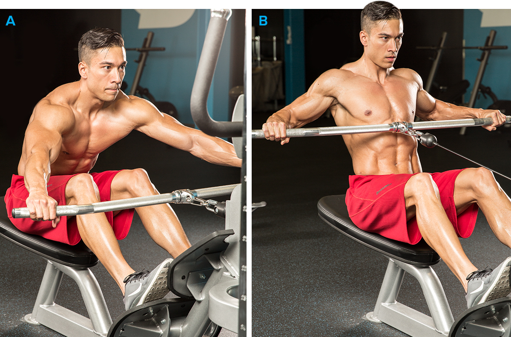

Best Muscle-Building Back Exercises!
Not sure which exercises to select on back day? Check out our list of the 10 best back builders and get ready to grow!When you crack your exercise toolkit open each week on back day, you've got a seemingly endless array of movements available. Knowing which tools are best suited for building a wide, thick back will help you get the job done faster, which is why we've assembled our list of top 10 mass-building back exercises.
While head-to-head exercise comparison research is a bit limited in this area, we selected the following 10 exercises based on factors such as available literature, how difficult each movement is, how much muscle each stimulates, and how unique each exercise is compared to others. This list will also help you figure out where to place each exercise in your workout.
If you get bowled over by the sheer number of rows you can do on back day, or even draw a total blank when thinking of new exercises to try, consider this list your new back blueprint. Give us your thoughts at the bottom in the comments and add any other recommendations you might have!
Barbell Deadlift
Why it's on the list: This is technically more than a back exercise—it hits the entire posterior chain from your calves to your upper traps—but it's the absolute best for overall backside development. Technique is uber-important with the deadlift, but once you nail it, you can progress to lifting monster weights that will recruit maximum muscle, release muscle-building hormones, and help you get big.
There are also numerous deadlift progression programs you can follow to help you reach new personal bests. Physiologists love to prescribe the deadlift when programming for strength and conditioning because the exercise hammers your musculature and is one of the best choices to strengthen your bone structure. There Are Also Numerous Deadlift Progression Programs You Can Follow To Help You Reach New Personal Bests.
Stick with the conventional deadlift on back day; other variations, like the popular sumo-style, increase the activity of muscle groups other than the back.[1] In your workout: If you're going heavy (sets of fewer than about 6 reps), do deadlifts first so you're fresh. If you're doing deads for repetitions, you can do them later in your workout.Why it's on the list: This is technically more than a back exercise—it hits the entire posterior chain from your calves to your upper traps—but it's the absolute best for overall backside development. Technique is uber-important with the deadlift, but once you nail it, you can progress to lifting monster weights that will recruit maximum muscle, release muscle-building hormones, and help you get big.
There are also numerous deadlift progression programs you can follow to help you reach new personal bests. Physiologists love to prescribe the deadlift when programming for strength and conditioning because the exercise hammers your musculature and is one of the best choices to strengthen your bone structure. There Are Also Numerous Deadlift Progression Programs You Can Follow To Help You Reach New Personal Bests. Stick with the conventional deadlift on back day; other variations, like the popular sumo-style, increase the activity of muscle groups other than the back.[1] In your workout: If you're going heavy (sets of fewer than about 6 reps), do deadlifts first so you're fresh. If you're doing deads for repetitions, you can do them later in your workout.
Wide-Grip Pull-Up
Why it's on the list: It's always a good idea to have an overhead pulling movement in your back routine, and the pull-up is one of the best. Wide-grip pull-ups are excellent for putting emphasis on the upper lats. A closer grip may allow for a longer range of motion, but it may be possible to load the wide-grip pull-up to a greater degree because of an optimized starting joint position. The biggest challenge here for most trainers is training to failure in the right rep range for growth, which is 8-12.
If you do pull-ups early in your workout, you might have to add a weighted belt. Of course, if you find them difficult, you can always use an assisted pull-up machine or a good spotter, or switch to the wide-grip pull-down, which is a solid substitute. If your shoulders are healthy, pulling behind the head is okay.

Good form is extremely important here. In the starting position, the scapula should be retracted—pull your shoulder blades down and toward each other—prior to initiating the pull. Wide-Grip Pull-Up In your workout: Because the pull-up range of motion is so long, several light reps make great warm-up moves for the shoulder joints. Since form is so important with these, it may be best to push pull-ups toward the front of your workout to ensure proper shoulder-joint positioning.
Wide-Grip Seated Cable Row
Why it's on the list: Just about everyone defaults to the close-grip bar on rows. If that sounds like you, you'll find using a wide grip on a lat bar a nice change of pace because it shifts some of the emphasis to the upper lats. Wide rows mimic some back machines, so don't do both in your workout unless you make some other kinds of changes, like grip or target rep range. You might even try flipping your grip—and going about shoulder-width apart—which better targets the lower lats as the elbows stay tighter to your sides.
Wide-Grip Seated Cable Row
In your workout: Like machines, cables are best done toward the end of your workout. Choose a weight that enables you to complete no more than about 12 reps.
Single-Arm Dumbbell Row
Why it's on the list: This is a great unilateral exercise—each side works independently—that allows you to move a lot of weight. You'll get greater range of motion when training unilaterally, and you won't be restrained if your weaker side fails first. You may also be better able to support your lower back—which may have taken plenty of punishment by now—when placing one hand on a bench. Allowing a slight degree of rotation of the trunk may engage a greater degree of "core" musculature, as well.2
In your workout: Unless you intentionally flare your elbow out wide, this exercise focuses more on your lower lats. Do it anywhere from the middle to the end of your workout for sets of 10-12.
Single-arms Smith machine
Why it's on the list: This bad boy is basically a single-arm dumbbell row performed on a Smith machine. It's a great and novel choice for your lower lats. Stand sideways to the machine, grasping the bar toward the middle, and keep your body close to the apparatus using a split stance and bent knees for balance. As you pull the bar up as high as you can, your body may sway a bit to keep the movement natural, which is OK.
In your workout: Do this exercise toward the end of your back routine for sets of 8-10 or 10-12. Do it in place of the single-arm dumbbell row—not both—since the exercises are similar.